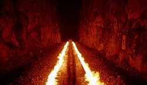

El otro barrio
 De: La Frikipedia, la enciclopedia extremadamente seria.
De: La Frikipedia, la enciclopedia extremadamente seria.
El otro barrio

La muerte en su más tierna infancia
El otro barrio, vallecas es donde va la gente cuando Pololoid le pega un espadazo de su puta madre, o en casos excepcionales y rarisimos, muere por otras causas. Hay varias formas de ir al otro barrio:
- Cortándose las venas (solo si eres Emo).
- Tirándote desde una azotea (o en su defecto cualquier otro lugar lo suficientemente alto como para matarte).
- Pegándote un tiro.
- En autobus.
- Con una
sana y recomendable sobredosis de droga.
- De cualquier otro modo que se te ocurra y que te mate.
Hay una leyenda urbana que dice que antes de ir al otro barrio se te aparece un amable señor con una capucha negra y una guadaña llamado muerte y te da por culo te dice que ha llegado la hora y amablemente te corta la cabeza con su guadaña. cabe destacar tambien que este señor es un esqueleto por que un dia se aposto con niño loco aleman. Acto seguido Raikkonen ganó el mundial de Fórmula 1 de 2007.
Creacion e historia del otro barrio
El otro barrio surgio de la necesidad de buscar algún lugar para mandar los cuerpos de los putos canis victimas de la segunda guerra jébica. A Judas, lider del bando de los jebis, se le ocurrio crear "un nuevo barrio" muy pero que muy muy muy muy muy muy muy pero que muy apartado de la civilizacion donde sus almas (bueno o la bazofia que haya dentro de los canis, porque ya sabemos que desde luego no tienen alma) pudieran ser brutalmente apaleadas descansar. A esto se le llamó el otro barrio. Pronto fue conocido como infierno ya que un lugar en el que la poblacion es mayoritariamente cani y del que no se puede salir no merece otro nombre. En su construccion participaron grandes personajes, como el Pato Donald, Stewie Griffin o Chanquete (que cuando murio ocupo un puesto de honor dentro de dicho barrio).
 El otro barrio despues de la llegada de
Marty McFly y el Doc Satanas al poder. Antes estaba todo lleno de canis. A mejorado bastante
Habitantes y otros especimenes del otro barrio
El otro barrio es un lugar muy habitado, debido sobre todo al gran numero de personas que Pololoid mata a lo largo del dia. entre los habitantes del otro barrio se encuentran:
- Dios
- Tú
- La tecla ANY
- Pololoid (aunque no está muerto, de vez en cuando se pasa para visitar a sus víctimas y jugar al póquer con Dios)
- El resto de victimas de pololoid
- Yo (por no escribir con mayuscula el nombre de Pololoid)
- El resto de mortales que no son victimas de Pololoid (Excepto Satanas, que cuando murio se le encargo la tarea de dirigir el otro barrio, y lo hace desde su chalet en Marbella)
- Chanquete (si, por si no te habias enterado, Chanquete ha muerto)
- El Tato
- Jonh J. Perez (a saber quien sera ese)
- Caillou (al final, el cancer lo mató)
- Frank Grimes (si, el de los Simpson)
- Los Teletubbies (cogieron SIDA de tanto darse por culo)
Maneras de salir del otro barrio
- No hay ninguna manera, te jodes
- Es mentira, si que la hay
- Ligándote y tirandose a la recepcionista.
- Haciendo un pacto con Satanas (Pero volverás).
- Con mucho cuidado.
- Mi perro se llama Linternas.
- Esto ultimo no viene al caso, ya que lo he dado en adopción.
- Contando hasta infinito (y más allá).
- No muriendo.
¿Sabías que...
- ...el otro barrio es tambien conocido como infierno?
- ...solo el Pato Donald sabe donde está la puerta de salida del otro barrio?
- ...la recepcionista del otro barrio es la Duquesa de Alba? (por eso deciamos que ligarsela es una forma poco recomendable de salir)
- ...si pulsas Ctrl+Alt+Supr tu ordenador viaja al otro barrio?
- ...si te lo cargas a martillazos tambien?
- ...tu tambien porque tu madre te matara por haberlo hecho?
- ...no hay que confundir el otro barrio (infierno) con la otra acera (Chueca, gays, etc...)?
- ...si estas en la otra acera lo mas probable es que tambien acabes en el otro barrio por coger el SIDA al ser
porculizado sodomizado por un marom@?
- ...Verde?
- ...la espada de Pololoid es más grande que la de Cloud Strife?
- ...El otro barrio está en Patraix
Autor(es):
- El Rer 3
- Topo topez
- Gñapero Solitario
- HpGarcía
Frikipedia 2005-2016, Licencia
GFDL 1.2 - Extraído por FrikiLeaks